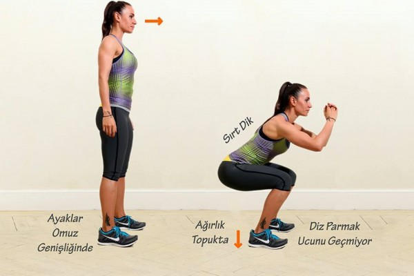
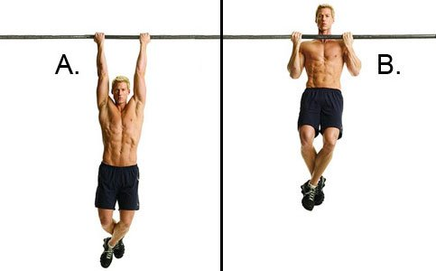
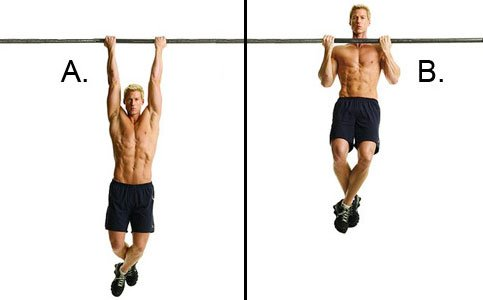

Squat yaparken nelere dikkat etmeliyiz?
- Ayak topuklarınız omuz genişliğinde açık olmalı.Parmaklar ise 30 derece dışarı doğru bakmalı.
- Squat yaparken yükü omuz kaslarına vermelisiniz. Yükün boyun bölgesinde olmamasına dikkat etmelisiniz.
- Squat esnasında belinizi kesinlikle bükmemelisiniz.
Bench press yaparken nelere dikkat etmeliyiz?
- Barı tam olarak başparmağınızla kavramalı ve olabildiğince sağlam bir şekilde tutmalısınız.
- Barı avuç içinin üst bölgesine yakın bir şekilde tutarsanız ağırlık bileklerinizi bükebilir ve bileğinizin zarar görmesine yada barın üzerinize düşmesine sebep olabilir.
- Barı avuç içlerinizin alt kısmına yerleştirmeli ve bilekleriniz düz bir şekilde barı kaldırmalısınız.
Barfiks çekerken nelere dikkat etmeliyiz?
- Barfiks çekmek için kürek kemiklerimizi nasıl kullanabiliriz bunu öğrenmelisiniz.
- Sırt kaslarınızı aktif bir şekilde kullanmalısınız.
- Kilonuzun vücudunuzu tartabileceğinden emin olmayı unutmayın.